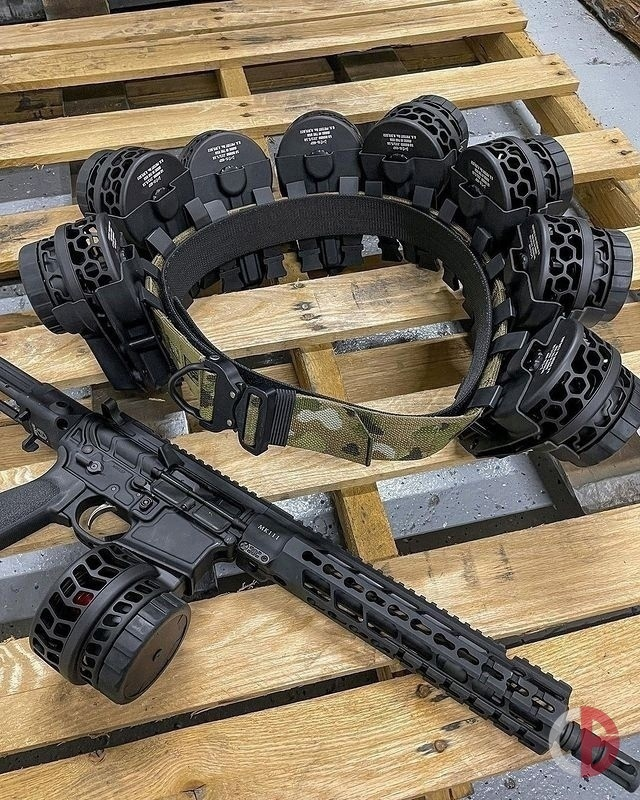

<!DOCTYPE html>
<html lang="ru"></html>
<head>
    <meta charset="UTF-8">
    <meta name="viewport" content="width=device-width, initial-scale=1.0">
    <title>"Это сайт с ФОТОЙ"</title>
</head>
<body>

     <iframe width="1000" height="360" 
         src="https://www.youtube.com/embed/Lg3lzb9T5oE" 
         title="Вы 100% не знаете, что будет с розетками! Три варианта! #энерголикбез" 
          frameborder="0" allow="accelerometer; autoplay; clipboard-write; encrypted-media; gyroscope; picture-in-picture; web-share" 
         referrerpolicy="strict-origin-when-cross-origin" 
         allowfullscreen>
      </iframe>
   
    <h1>Ну тут короче можно посмотреть разные фото </h1>
       <h2>и  сохранить если чё</h2>


     
     
     <section>
        <p>
            <h1>Подслушано в Aion</h1>
            <h2>К посту о том, что в рандомной пати всегда находится
                 человек, который всех поучает... Так вот, я один из 
                 таких. Из-за моего работы я не всегда могу играть, 
                 поэтому о КП не может быть и речи, следовательно, 
                 играю соло и в данжи хожу с рандомами. И проще 10 
                 раз объяснить одно и тоже перед боссом, чем потом 
                 на середине ХП понимать, что твои сапортийцы нихрена
                  не знают о ротации босса, да и свои скилы читали 
                  через раз.
            </h2>

            <a href="sitis99.github.io/figmailabsa/" Там  тоже ФОТА </a>
                
                 Photo
        </p>
     </section>


</body>
</html>